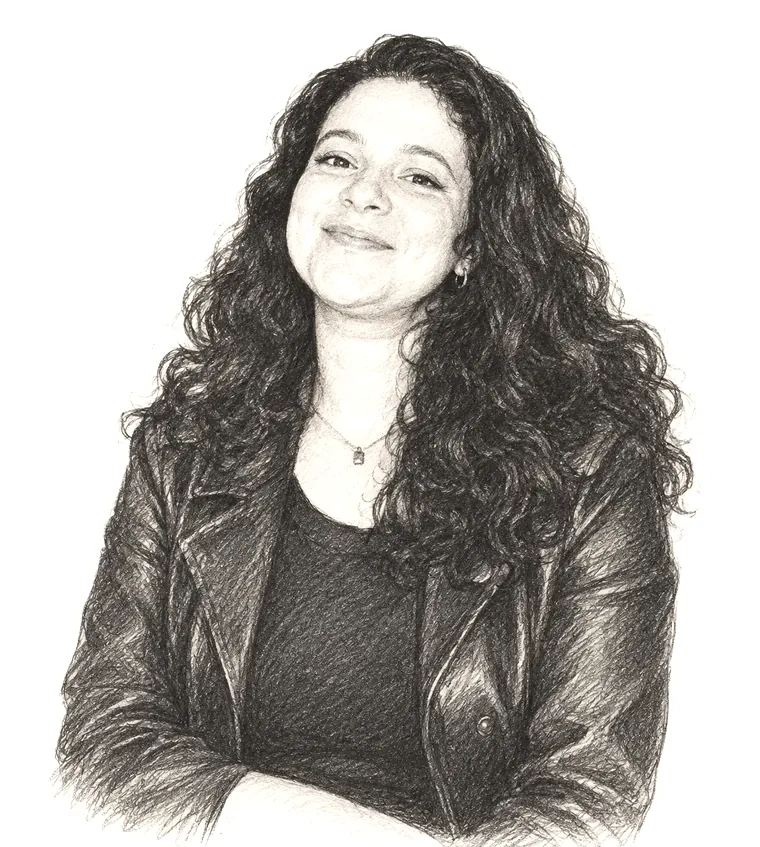

Strategic Non-Reconstruction
Temporal proximity and heritage practice in post-conflict Lebanon: a comparative discourse analysis of Beit Beirut and the Beirut Port grain silos. Manuscript in preparation for publication.
Art · Cultural Heritage · Research
Heritage researcher and grants lead, working between the Arab world and Europe on memory, reconstruction and the institutions that care for culture.
Alexandria · Doha · Glasgow · Paris · Rotterdam · Lisbon

I was born in Alexandria and moved to Doha as a young child. My interest in art and culture began on visits home, where I kept finding that another historic building had been demolished since I was last there. That sense of loss, and the question of what a city chooses to keep, has shaped my work ever since.
I studied at Georgetown University in Qatar, then completed an Erasmus Mundus master's in managing art and cultural heritage across four countries. Along the way I have learned to keep my life and skills in a suitcase. Today I research post-conflict heritage in the Middle East and lead grants work for a STEM education nonprofit, helping good programmes find the funding they need.
Writing, research and projects. The collection is being assembled; pieces will be added here.
Temporal proximity and heritage practice in post-conflict Lebanon: a comparative discourse analysis of Beit Beirut and the Beirut Port grain silos. Manuscript in preparation for publication.
Archival research on the city's heritage sites, read through historical maps and GIS, and the stories behind the buildings that remain.
Curatorial projects, essays and demos will appear here.
2022 — present
Built the grants department of a STEM education nonprofit from scratch; secured about $100,000 in competitive funding and now leads a team of up to seven. Part-time, remote.
2024
Research on museum practice and cultural-heritage policy across the Gulf; content planning for the Qatar–Morocco Cultural Year.
2022 — 2023
Archival and documentary research on Alexandria's heritage, and bilingual communications that grew the institution's outreach.
2020 — 2022
2019
Arabic native · English fluent · French basic · Dutch learning
Based between Doha and the Netherlands.